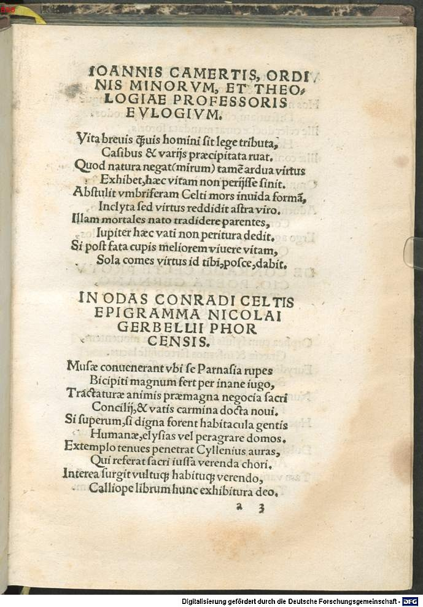

Celtis 4 (Nikolaus Gerbel)
Faksimile


Transkription
In Odas Conradi Celtis epigramma Nicolai Gerbellii Phorcensis.
Musae convenerant ubi se Parnasia rupes
Bicipiti magnum fert per inane iugo,
Tractaturae animis praemagna negotia sacri
Concilii, et vatis carmina docta novi.
Si superum, si digna forent habitacula gentis
Humanae, elysias vel peragrare domos.
Extemplo tenues penetrat Cyllenius auras,
Qui referat sacri iussa verenda chori.
Interea surgit vultuque habituque verendo,
Calliope librum hunc exhibitura deo.
Vade ut interpres divum, manesque Tibulli
Accede, et Choae candida plectra lyrae.
Hos numeros quondam peramati vatis ad unguem
Discutiam, cithara suppeditante modos.
Ille celer doctae curat mandata sororis,
Hos rediens vatis facta probasse refert.
Illae confestim silvis plaudentibus, omnes
Inter se carmen concinuere novum.
Omnia respondent numeris, compagine docta
Versiculos vatem composuisse ferunt.
Adventi et pulcher cithara comitatus Apollo,
Componens munda vocibus aure Chelim.
Ergo age, non pudeat teneros tractasse libellos,
Quos probat arguto pectine tanta cohors.
Übersetzung
Ein Epigramm auf die Oden des Konrad Celtis von Nikolaus Gerbel aus Pforzheim.
Die Musen waren zusammengekommen, wo die Parnassische Felsschlucht sich dem zweigipfligen Bergrücken durch eine große Weite zieht, um im Geiste die großen Aufgaben der heiligen Versammlung und die gelehrten Lieder eines neuen Sängers zu behandeln. Wenn die Behausungen des menschlichen Volks der Götter würdig wären, oder die elysischen Häuser zu durchstreifen. Plötzlich durchdringt Merkur zarte Lüfte, um die ehrwürdigen Befehle des heiligen Chors zu vermelden. Inzwischen erhebt sich, von verehrungswürdigem Blick und Gestalt, Kalliope, um dem Gott dieses Büchlein zu überreichen. "Geh dahin wie der Bote der Götter und tritt heran an die Manen Tibulls und an die hellklingenden Plektra der Koischen Lyra. Diese Melodien des einst sehr geliebten Sängers will ich genau so anschlagen, wobei die Kithara mir die Musik gewährt." Jener sorgt sich schnell um den Auftrag der gelehrten Schwester, kehrt zu diesen zurück und berichtet, die Taten des Sängers zu billigen. Jene stimmten alle unter sich ein neues Lied an. Alles antwortet im Vers, man erzählt, dass ein Sänger mit gelehrtem Bindemittel Verslein erdichtet habe. Auch kommt der schöne Apoll herbei, begleitet von der Kithara, und setzt mit feinem Ohr die Lyra für die Töne zusammen. Also wohlan, nicht soll man sich schämen, zarte Büchlein anzurühren, die eine so große Schar mit helltönendem Plektrum gutheißt.
Metadaten
| Titel des Gedichts: | In Odas Conradi Celtis epigramma Nicolai Gerbellii Phorcensis. |
| Autor der Gedichts: | Nikolaus Gerbel (Nicolaus Gerbellius) |
| Containerwerk: | Conradi Celtis Protucii, primi in Germania poetae coronati, libri Odarum quattuor, cum Epodo, et saeculari carmine diligenter et accurate impressi, et hoc primum typo in studiosorum emolumentum editi, Straßburg 1513 |
| Autor des Containerwerks: | Konrad Celtis (Conradus Celtis) |
| Gattung des Containerwerks: | Lyrik, Oden, Epoden, Carmen saeculare |
| Erscheinungsjahr: | 1513 |
| Verschlagwortung: | Musen, Musenweihe, Poetologie, Apoll, Merkur, Kalliope, Chor, Parnass, Tibull, Elegie |